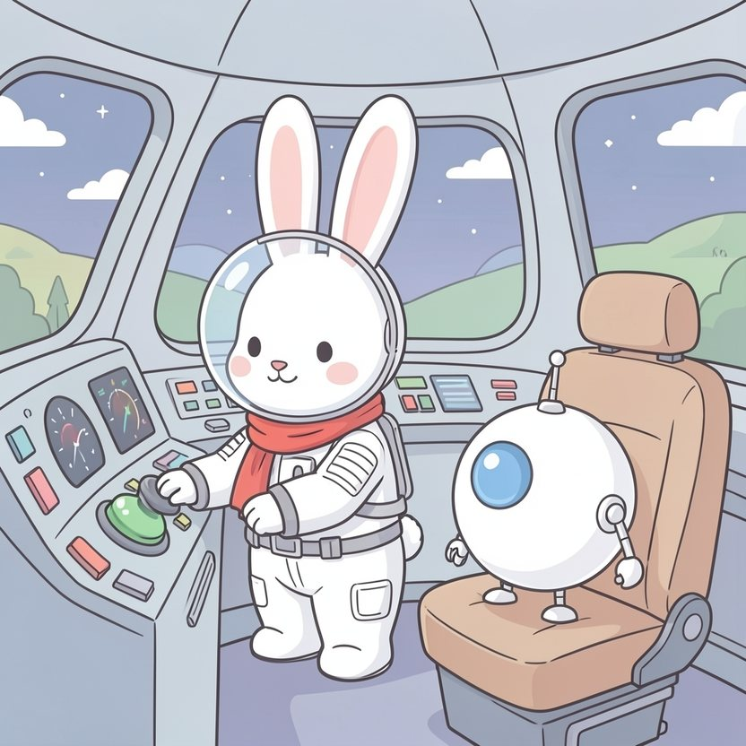

Titistoire › Les Étoiles (3-6 ans)
Rosie et la colère rouge
Une histoire de Rosie la lapine pour parler de : la colère.

▶ Écouter et regarder l'histoire
Gratuit, sans inscription : la voix lit, le texte suit mot à mot, les images tournent comme dans un album.
Le texte de l'histoire
Aujourd'hui, Rosie et Bip le robot s'envolent pour la planète Guimauve. La fusée est fin prête, les ceintures sont bouclées. Rosie enfonce le gros bouton vert. « Un, deux, trois… décollage ! »
Rien. La fusée fait « pout », et c'est tout.
Rosie réappuie. « Pout. » Elle appuie plus fort, des deux pattes. « Pout, pout. » Dans son ventre, quelque chose se met à chauffer tout doucement, comme une casserole sur le feu.
« Vérification en cours, annonce Bip de sa voix tranquille. Merci de patienter. » Patienter ! Rosie déteste ce mot. Ça chauffe dans son ventre. Ça grimpe dans sa poitrine. Ça bouillonne.
Ses joues deviennent roses. Puis rouges. Puis rouge tomate. Ses oreilles se dressent, raides comme deux piquets. Ses poings se serrent tout seuls.
C'est la colère rouge. Quand elle arrive, de la fumée lui sort presque des oreilles, et Rosie ne peut plus rien arrêter. C'est comme une fusée, justement : une fois lancée…
« MARCHE, STUPIDE FUSÉE ! » Bam ! Elle tambourine sur le tableau de bord. Bam ! Sur le bouton bleu, le jaune, le violet. Bam, bam, bam ! Sur tous les boutons à la fois, qui clignotent, affolés.
« Attention ! s'alarme Bip, les bras écartés. Il ne faut surtout pas toucher le bouton rou… » BAM.
Un petit clic. Puis un grand silence. Puis Rosie sent ses pattes quitter le sol, et ses oreilles s'envoler.
Elle a coupé la gravité : plus rien ne tient par terre. Tout s'envole, les carottes, les tournevis, les chaussettes, et la soupe de midi, qui flotte en grosses bulles orange.
Rosie tournoie lentement, la tête en bas, les pieds au plafond. Elle voudrait taper encore, mais dans le vide, on ne peut taper sur rien. Sa colère pédale dans l'air.
Et pire que tout : la boîte à outils de Bip s'est ouverte. Ses boulons de rechange s'éparpillent dans la cabine comme une ribambelle de moucherons. Bip tend ses petits bras. Trop courts : il n'en rattrape aucun.
« Mes boulons… », grésille Bip d'une toute petite voix. Dans la pagaille, une carotte a heurté son bras gauche. Il pend, tout de travers, comme une branche cassée.
Rosie le regarde, les pattes sur la bouche. La colère rouge est encore là, mais derrière elle, autre chose se faufile. Quelque chose de froid et de tout petit. « C'est moi qui ai fait ça ? » chuchote-t-elle.
« Affirmatif, répond Bip sans se fâcher. Mais tu n'étais pas vraiment toi. Tu étais la colère. Veux-tu que je te montre comment je refroidis mes circuits ? »
« Quand je chauffe trop, explique Bip, je souffle. Trois fois. Comme ça. » Pfffff… Dans son dos, un petit ventilateur se met à ronronner.
Rosie n'a pas de ventilateur. Mais elle a son ventre, tout rond sous ses pattes. Elle ferme les yeux. « Un… » Pfffff. « Deux… » Pfffff. « Trois… » Pfffffffff.
Elle sent la casserole refroidir. Ses poings s'ouvrent. Ses oreilles redescendent. La colère rouge devient rose, puis toute petite, puis elle s'en va par le hublot, comme un nuage, se perdre parmi les étoiles.
« Pardon, Bip. » Rosie cueille les boulons un par un, comme des papillons, et les range dans un bocal. Elle revisse ensuite le bras du robot, tout doucement, en tirant la langue.
Puis elle réappuie sur le bouton rouge. Ploum ! Tout dégringole d'un coup, les chaussettes, les tournevis… et la soupe. Tant pis : on mangera des carottes.
« Vérification terminée, annonce Bip en montrant un levier rouge. La fusée ne démarrait pas, car le frein à main était serré. » Rosie éclate de rire, à s'en tenir le ventre. Tout ça pour un frein à main !
Elle desserre le frein. Puis, d'un seul doigt, tout doucement, elle appuie sur le bouton vert. « Un, deux, trois… décollage ! » Et VROUM ! La fusée bondit parmi les étoiles, droit vers la planète Guimauve.
La colère rouge est revenue, bien sûr. Elle revient toujours : quand un lacet s'emmêle, quand une tour de cubes s'écroule, quand on perd aux petits chevaux.
Mais maintenant, quand Rosie sent la casserole chauffer, elle ferme les yeux et pose les pattes sur son ventre. Un… deux… trois. Et Bip, tout contre elle, fait ronronner son petit ventilateur. Pour lui tenir compagnie.